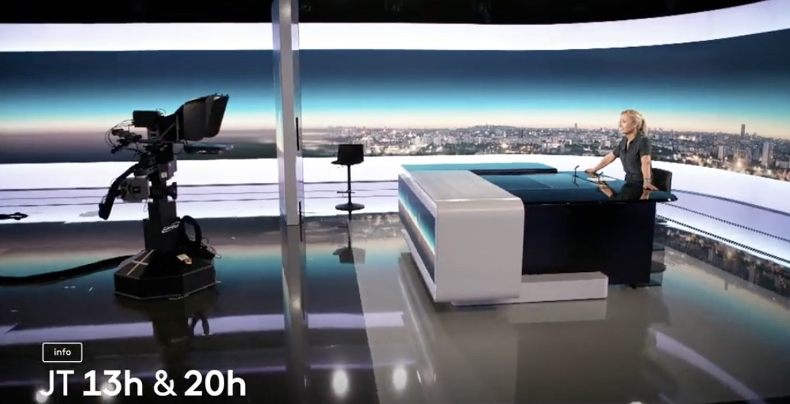
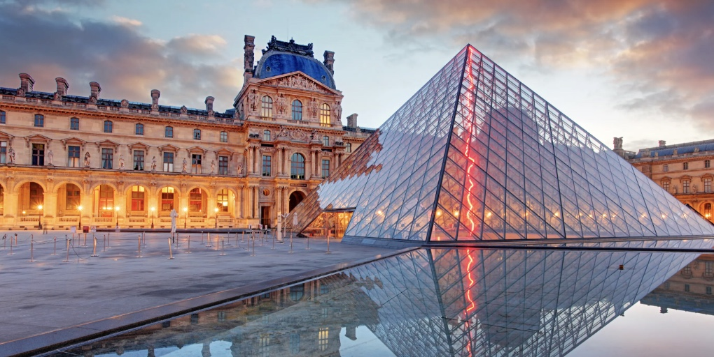
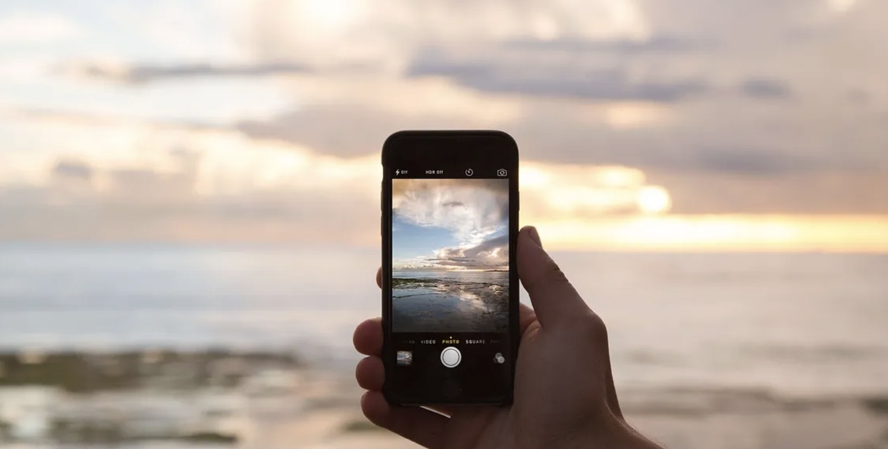
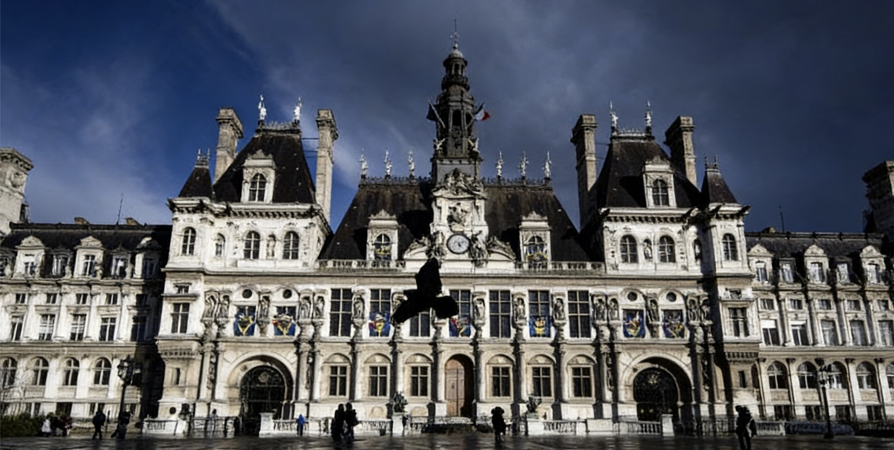

Info | Partenariat média · France 2 · Diffusion nationale
À partir d'août, France 2 diffuse chaque vendredi à 20h une émission dédiée au thème du voyage. Le premier numéro met en lumière la sélection du festival. Un partenariat inédit pour valoriser le cinéma d'auteur en plein air.
Voir l'article
Info | Musée du Louvre · Rencontres publiques
Tous les samedis d'août, le Louvre accueille des tables rondes gratuites autour du thème « Voyage et cinéma ». Réalisateurs, géographes et critiques dialoguent avec le public. Une passerelle entre création et spectateurs.
Voir l'articleInfo | Programmation 2026 · 10 films · Thème : Voyage
Du 5 au 7 août 2026, le Parc Monceau accueille dix films autour du voyage. De « Lost in Translation » à « Central do Brasil », chaque soirée invite à l'évasion. Entrée libre de 18h à minuit. Réservation conseillée sur le site.
Voir l'article
Info | Concours photo · Participation publique
À partir de juillet, les spectateurs sont invités à partager sur Instagram leur photo préférée autour du voyage avec le hashtag #FilmsPleinAirVoyage. Les plus beaux clichés seront projetés avant les séances du festival. Une façon de vivre le voyage à travers vos regards.
Voir l'articleInfo | Courts-métrages · Thème Voyage
L'association lance un appel à courts-métrages sur le thème du voyage. Les films sélectionnés seront projetés lors des prochaines éditions. Un tremplin pour les jeunes créateurs. Candidatures ouvertes jusqu'au 31 décembre 2026.
Voir l'article
Info | Mairie de Paris · Affichage culturel
La Mairie de Paris accompagne la nouvelle édition du festival. Des affiches et écrans numériques relayeront la programmation dans les espaces culturels de la capitale. Une visibilité renforcée pour faire rayonner le cinéma d'auteur en plein air.
Voir l'article